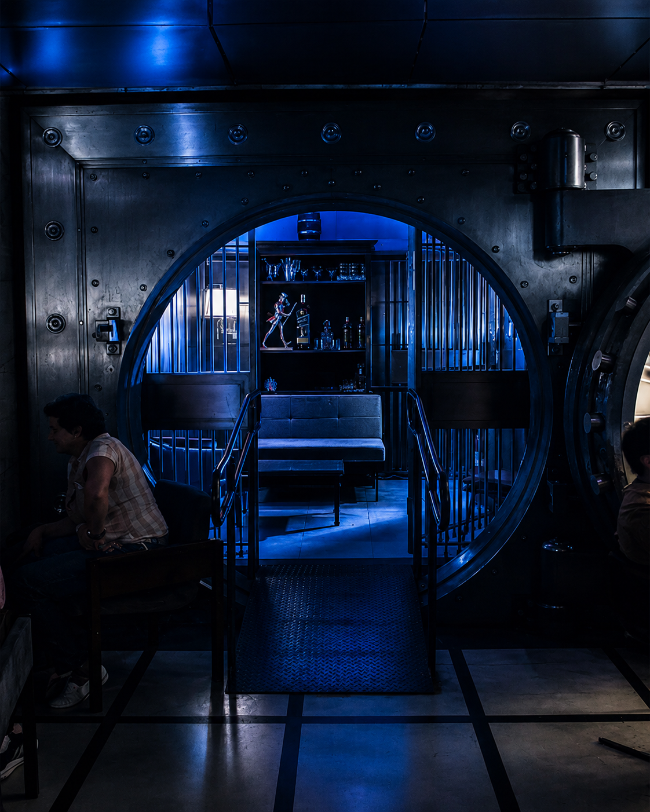
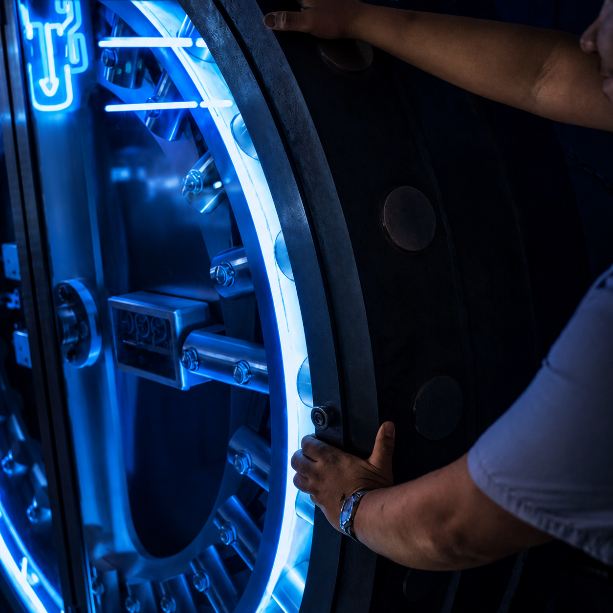
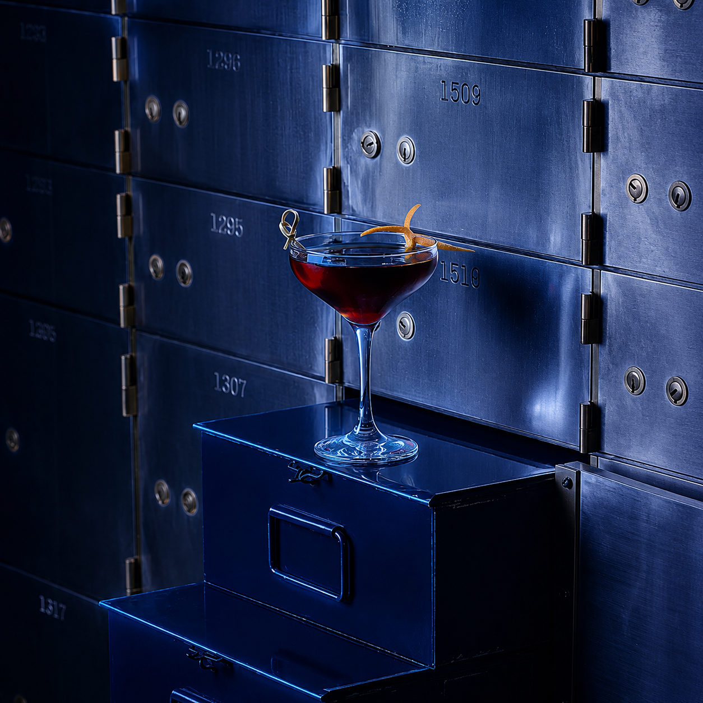

27 de agosto · Bar do Cofre · São Paulo
Nuvemshop Next convida
Os próximosmovimentos dequem já é referênciacomeçam à mesa.
Em 27 de agosto, o Bar do Cofre recebe sócios, fundadores e quem lidera o e-commerce de marcas de varejo. Uma conversa franca sobre o que o próximo ano vai exigir de cada operação.
Convite nominal · Dois lugares por marca · Confirmação até 25/08


A conversa
Há conversas que não são abertas ao público. Esta é uma delas.
A noite começa com uma pergunta e segue sem roteiro fechado. Os desafios de quem conduz operações maduras de e-commerce dão o rumo da conversa.
A pergunta que abre a noite“Se você pudesse destravar um único gargalo para crescer no próximo ano, qual seria?”
Quem participa
Um encontro entre pares, formado com critério.
A curadoria reúne marcas de varejo com e-commerce próprio. À mesa estarão sócios, fundadores e líderes que respondem pelo crescimento do negócio.
Algumas já são clientes Nuvemshop Next e trazem para a mesa a experiência de quem enfrenta desafios semelhantes.
Bar do Cofre · Farol Santander
Uma mesa de 30 lugares dentro do antigo cofre do Farol Santander.
No subsolo do edifício, entre portas monumentais e caixas de depósito preservadas, o Bar do Cofre dá à noite o grau certo de reserva.

Centro Histórico · Farol Santander
RSVP
Este convite é para quem responde pelo e-commerce da marca.
Confirme sua presença até 25/08. Você receberá por e-mail os detalhes do encontro e o convite de agenda.
São Paulo